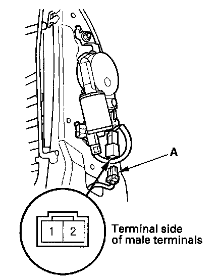
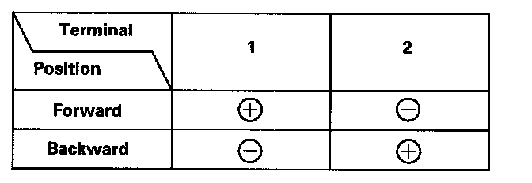

Motor Test
Motor Test1. Remove the front seat-back cover.

2. Disconnect the 2P connector (A) from the lumbar support motor.

3. Test the motor by applying battery voltage and body ground to the terminals.
4. If the motor does not run or fails to run smoothly, replace it.